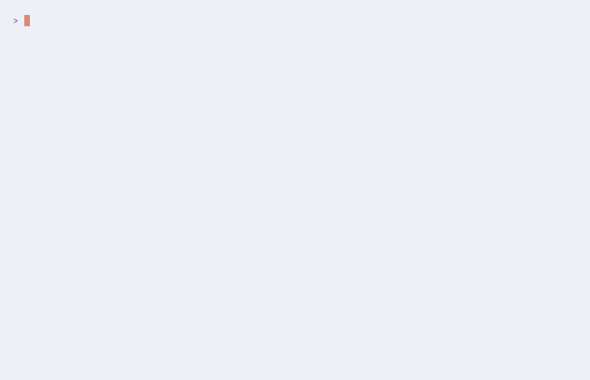

patient-zero
Open source checks for AI apps that touch patient data. It tells you what to fix, shows a buyer exactly what was tested, and never calls anything "compliant".
pip install git+https://github.com/joeyvictorino/patient-zero pz check . # read your project, list what to fix first pz demo # watch it investigate a deliberately broken clinic app
Try the verifierRuns in this browser. Click "Try a sample" to see a signed report checked, and one that was edited get caught.
Source on GitHubMIT licensed. Python, standard library plus PyYAML.
What does not workEvery known limit is a file in the repository.
What pz check says about a typical first draft

Three ways in
- You are building a health app, often with an AI coding tool.
pz check .needs no setup. It also runs as an MCP server, a Claude Code skill, a GitHub Action and a pre-commit hook. - You sell to clinics. Seal what you tested, have an assessor co-sign, and send one file. The badge states counts and links to the evidence.
- You are deciding on a vendor. Send them the questions, and check what they send back in the verifier.
What it is not
Not a HIPAA certification: none exists. Not a pentest, and not a code review. A clean result is weak evidence, and the score says so. It is new, has one author, and has been tested against its own demo and sample apps, not yet a real product in a real clinic.